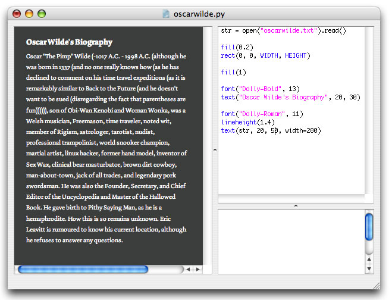
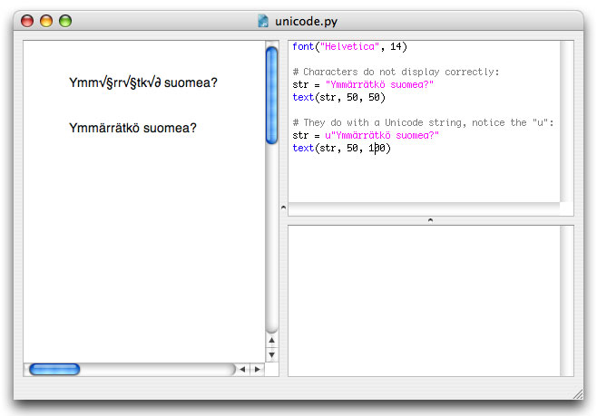

Variables often store pieces of text, called strings, that will be drawn to the screen.
When a piece of text, a string, is assigned to a variable, it needs to be wrapped in quotes; it needs to start and end with a quote. Otherwise NodeBox might think the piece of text is the name of a variable, or something else.
Consider the following example:
hello = 20 str = hello print str >>> 20 str = "hello" print str >>> hello
Strings are lists of characters
A string is like a list of individual characters. This way, you could access each character in the string like any other list. In the example below, I make handy use of this feature by selecting random characters from the chars string with the choice() command and drawing them to the screen Joshua Davis-style.

Manipulating strings
Strings have a number of very useful methods:
- string.upper(): returns the string in uppercase.
- string.lower(): returns the string in lowercase.
- string.capitalize(): returns the string with the first character capitalized.
- string.find(text, start=0): returns the index position of text in the string.
- string.replace(old, new): replaces all old text in the string with new
- string.split(): returns the string as a list of words.
- string.join(list): concatenates a list of words.
Strings can be converted to uppercase and lowercase with the upper() and lower() methods, or have the first character capitalized with capitalize. Remember, these are methods, so instead of saying str = upper(str) you need to say str = str.upper().
str = "Kumquats, Kumquats! I must have my Kumquats! - Oscar Wilde" str = str.upper() print str >>> KUMQUATS, KUMQUATS! I MUST HAVE MY KUMQUATS! - OSCAR WILDE
The replace() method is especially useful when you want to filter mistakes from the string, or when you want to alter portions of the content:
str = "Something's rotten in the state of Denmark." str = str.replace("in", "in, like, ") str = str.replace(".", " dude.") str = str.replace("rotten", "way uncool") print str >>> Something's way uncool in, like, the state of Denmark dude.
Quotes in quotes
Text data often contain quotes themselves, especially if the text contains dialogue. When NodeBox examines the string and encounters such a quote, it would logically assume that the string is terminated here.
The following example won't work, NodeBox thinks (On his death bed): needs to be assigned to str, followed by garbage statements it doesn't understand:
str = "(On his death bed): "Those curtains are hideous." - Oscar Wilde"
Instead, the string needs to be wrapped in triple quotes:
str = """(On his death bed): "Those curtains are hideous." - Oscar Wilde""" print str >>> (On his death bed): "Those curtains are hideous." - Oscar Wilde
File input
When you're going to use long paragraphs of text, it's better to store the text in a separate text file and assign that to a variable, this keeps your script clean, and you can edit the text separately from the script.


Simply put the text in TextEdit, make it plain text, and import it into your script with the open() command.
Unicode characters
Unicode is a character system that allows computers to use symbols from all of the writing systems in the world. If you're going to use for example suomi or Hebrew in the output of your script, you'll have to know about Unicode.
The first thing to make sure is that the typeface you are going to use includes Unicode characters, so the text can be drawn in the font. Usually, large font families like Helvetica include Unicode for almost any Unicode character.
Next, you'll have to tell NodeBox that a piece of text includes special characters. This is as simple as adding a "u" to the front of the string quotes.
str = u"?אתה מדבר אנגלית" text(str, 50, 200)

When you are going to import text from a text file there are two things to look out for. First, the text file needs to saved as Unicode. In TextEdit, apply the plain text format and when you save it, select "Unicode (UTF-8)" from the Plain Text Encoding list.

Then when you import the contents of the file into NodeBox, you'll have to decode the text:
str = open("hebrew.txt").read() str = str.decode("utf-8") align(RIGHT) text(str, 100, 200)